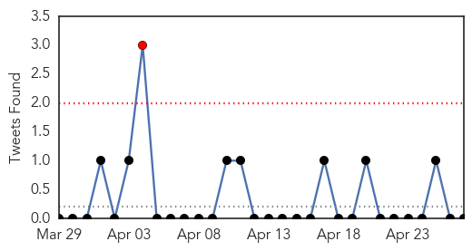
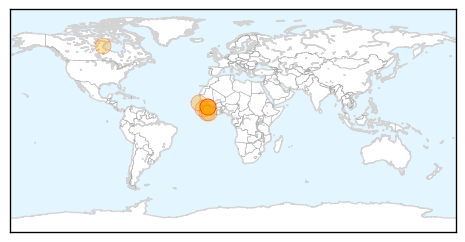
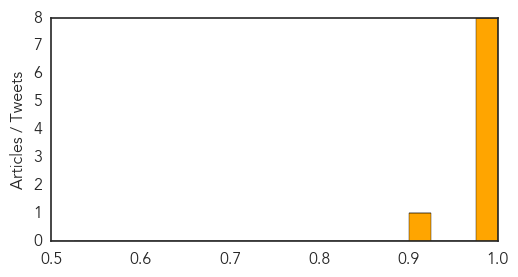

Ebola
30-Day Web Trend
0 alerts, 8 warnings

30-Day Twitter Trend
0 alerts, 0 warnings

Article Locations
Article Confidences
Top Articles:
- 1.000
- Lucky few who survive deadly Ebola virus face stigma - National
- 0.999
- Survivors of Ebola face second 'disease': stigma
- 0.999
- Survivors of Ebola face second 'disease': stigma
- 0.999
- Lucky few who survive the deadly Ebola face a second 'disease': The fear they can still infect
- 0.999
- Survivors of Ebola face second ‘disease’: stigma
- 0.995
- Ebola virus shows no sign of slowing
- 0.989
- You need to be prepared: Aussie doctor fighting Ebola epidemic
- 0.982
- Imagine surviving Ebola only to be shunned
- 0.914
- Ebola survivors face stigma
Top Tweets:
-
No tweets found for Apr 27, 2014
West Nile Virus
30-Day Web Trend
6 alerts, 0 warnings
30-Day Twitter Trend
0 alerts, 0 warnings

Article Locations

Article Confidences

Top Articles:
-
No articles found for Apr 27, 2014
Top Tweets:
-
No tweets found for Apr 27, 2014